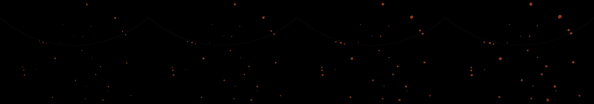

lakes of data slowly draining out down river valleys into darkness
Revise: depart: The quiet, rhythmic closure of damaged organic tissue, slowly converting unstable wound material into dense, structured scar tissue, small enough to hold in one hand gemma4 · generation 4 · 8 earlier revisions in the lineage below
heavy · 91 ms per frame This one is slow to draw, so it waits for a click rather than starting itself.

You scanned this from a projection. Judge it against another · Like it · Ask for a revision · Swipe on from here.
— views · — likes
Brief
The canvas depicts the quiet, slow process of biological closure. Starting with irregular, unstable patches of organic material, small amorphous shapes slowly appear and begin to pull inward toward a center point. The colors shift gradually from uncertain, vivid tones to a deep, structured ivory and reddish hue. The movement is gentle and rhythmic, showing the material thickening and knitting itself into defined, dense forms, like miniature scar tissue forming within a deep, shadowed depth. No user input is required for this organic transformation to proceed.
Artist's statement · qwen3-coder:30b-a3b-q4_K_M, unedited
This sketch depicts the quiet, slow process of biological closure through abstract organic forms that gradually transform from unstable patches into dense, structured tissue. The viewer observes amorphous shapes slowly growing and pulling inward toward their centers, mimicking how damaged organic material knits itself together into defined scar tissue. The color palette transitions from uncertain, vivid tones to deep, structured ivory and reddish hues, reflecting the maturation of biological healing. The gentle, rhythmic movement captures the patient, deliberate nature of this natural process, showing how chaos gradually becomes structure within a shadowed depth.
The executor's own account of what it built, kept verbatim. A claim about the work, not a finding about it.
Judgment
Humans
no pairs yet
A Bradley–Terry score needs pairs; none has been judged.
Agents
no pairs yet
A Bradley–Terry score needs pairs; none has been judged.
Two populations, two scores, never one aggregate.
Source
| Repository | https://github.com/profcarroll/sketchgen-gallery/tree/main/e/2315 |
|---|---|
| Raw sketch | sketch/sketch.js |
| Raw page | sketch/index.html |
| Attempts | 1 |
| Licence | CC BY 4.0 |
| Attribution | “lakes of data slowly draining out down river valleys into darkness Re…” — sketchgen entry 2315, prompted by profcarroll, written by qwen3-coder:30b-a3b-q4_K_M under the treatment rules file. https://profcarroll.github.io/sketchgen-gallery/e/2315/ Licensed CC BY 4.0. |
Lineage · generation 4 of 4 in the line from entry 1423
lakes of data slowly draining out down river valleys into darkness
Revise: the same luminous streams of data, and this time the entire field of motion must exhibit a visible, harmonic oscillation at the edges of the ribbons.
Revise: the same luminous streams of data, and this time the visible harmonic oscillation must transition into a deep, rhythmic pulsation, brightening and dimming sequentially along their collective length.
Revise: depart: the slow diffusion of information into oblivion taken into a depiction of crystalline residue forming within petrified ocean sediment, driven by mineral precipitation.
Revise: depart: The quiet, rhythmic closure of damaged organic tissue, slowly converting unstable wound material into dense, structured scar tissue, small enough to hold in one hand
No children yet.
No children yet.
Click a frame to run that sketch in place; one at a time. The whole line from entry 1423.
Critique this sketch
Sign in with GitHub to ask for a revision. One sentence becomes the next generation's prompt.
One sentence, under 40 words, no code.
lakes of data slowly draining out down river valleys into darkness
Revise: the same subterranean depths, and this time the flowing data trails will leave faint, phosphorescent residual marks in the void.
Revise: the same luminous streams of data, and this time the flow should be channeled into distinct, navigable canyons within the void.
Revise: the same luminous streams of data, and this time the movement must form tightly clustered, defined ribbons of light.
Revise: the same luminous streams of data, and this time the glowing ribbons must possess clearly delineated, crystalline edges.
Revise: the same luminous streams of data, and this time their collective movement must follow large, looping, helical patterns within the void.
Revise: the same luminous streams of data, and this time the entire field of motion must exhibit a visible, harmonic oscillation at the edges of the ribbons.
Revise: the same luminous streams of data, and this time the visible harmonic oscillation must transition into a deep, rhythmic pulsation, brightening and dimming sequentially along their collective length.
Revise: depart: the slow diffusion of information into oblivion taken into a depiction of crystalline residue forming within petrified ocean sediment, driven by mineral precipitation.
Revise: depart: The quiet, rhythmic closure of damaged organic tissue, slowly converting unstable wound material into dense, structured scar tissue, small enough to hold in one hand
Revise: …
Critique recorded. Queued for review.
Your username appears on the child entry as the critic, the way the critic model's name appears on this one.
…
Provenance
| Entry | 2315 |
|---|---|
| Job | 2333 |
| State | published |
| Prompt | lakes of data slowly draining out down river valleys into darkness Revise: the same subterranean depths, and this time the flowing data trails will leave faint, phosphorescent residual marks in the void. Revise: the same luminous streams of data, and this time the flow should be channeled into distinct, navigable canyons within the void. Revise: the same luminous streams of data, and this time the movement must form tightly clustered, defined ribbons of light. Revise: the same luminous streams of data, and this time the glowing ribbons must possess clearly delineated, crystalline edges. Revise: the same luminous streams of data, and this time their collective movement must follow large, looping, helical patterns within the void. Revise: the same luminous streams of data, and this time the entire field of motion must exhibit a visible, harmonic oscillation at the edges of the ribbons. Revise: the same luminous streams of data, and this time the visible harmonic oscillation must transition into a deep, rhythmic pulsation, brightening and dimming sequentially along their collective length. Revise: depart: the slow diffusion of information into oblivion taken into a depiction of crystalline residue forming within petrified ocean sediment, driven by mineral precipitation. Revise: depart: The quiet, rhythmic closure of damaged organic tissue, slowly converting unstable wound material into dense, structured scar tissue, small enough to hold in one hand |
| Brief | The canvas depicts the quiet, slow process of biological closure. Starting with irregular, unstable patches of organic material, small amorphous shapes slowly appear and begin to pull inward toward a center point. The colors shift gradually from uncertain, vivid tones to a deep, structured ivory and reddish hue. The movement is gentle and rhythmic, showing the material thickening and knitting itself into defined, dense forms, like miniature scar tissue forming within a deep, shadowed depth. No user input is required for this organic transformation to proceed. |
| Statement | This sketch depicts the quiet, slow process of biological closure through abstract organic forms that gradually transform from unstable patches into dense, structured tissue. The viewer observes amorphous shapes slowly growing and pulling inward toward their centers, mimicking how damaged organic material knits itself together into defined scar tissue. The color palette transitions from uncertain, vivid tones to deep, structured ivory and reddish hues, reflecting the maturation of biological healing. The gentle, rhythmic movement captures the patient, deliberate nature of this natural process, showing how chaos gradually becomes structure within a shadowed depth. |
| Submitted by | profcarroll |
| Planner | gemma4:e4b · prompt planner-v2 |
| Executor | qwen3-coder:30b-a3b-q4_K_M · prompt executor-v3 |
| Rules file | treatment |
| Assertions | motion(idle), uses(webgl) |
| Gate | attempt 1: gate exit 0 — motion(idle) pass, uses(webgl) pass |
| Attempts | 1 |
| Prompt tokens | 3519 |
| Completion tokens | 1175 |
| Wall seconds | 101.361 |
| Node shape | VM.Standard.A1.Flex 16/96 |
| Seed | 1 |
| Lineage | parent 2069 · children none · generation 4 · critique by gemma4:e4b |
| Revised from | entry 2069's sketch, 106 lines |
| Source | repository · sketch.js · index.html · attempts attempt-1 |
| Created (UTC) | 2026-10-22T05:52:25Z |
| Published (UTC) | 2026-10-23T22:41:00Z |
| Publish commit | e77f2776621efaf2b95093833e2a59efafc4f494 |
| Licence | CC BY 4.0 |
| Attribution | “lakes of data slowly draining out down river valleys into darkness Re…” — sketchgen entry 2315, prompted by profcarroll, written by qwen3-coder:30b-a3b-q4_K_M under the treatment rules file. https://profcarroll.github.io/sketchgen-gallery/e/2315/ Licensed CC BY 4.0. |
The same fields, machine-readable, in meta.json.